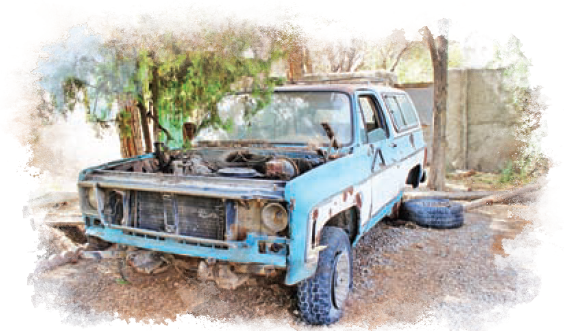
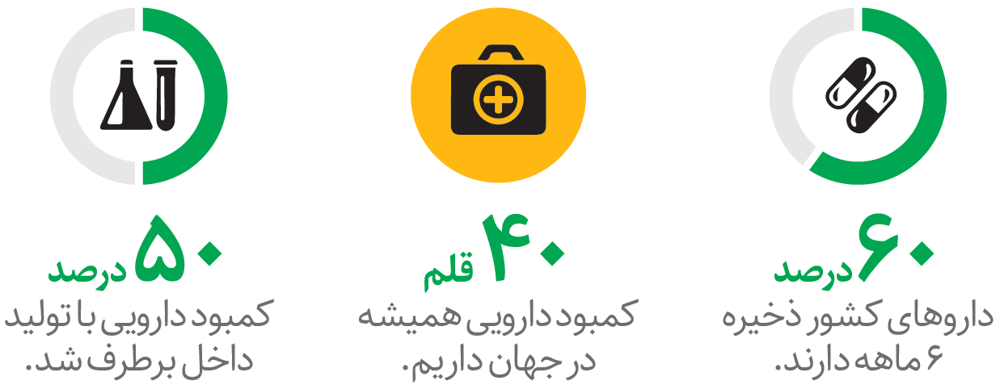

|

گزارش اختصاصی همشهری از خودروی حامل امام (ره) در روز 12 بهمن
مشهورترین بلیزر ایران کجاست؟
صفحه۹
رفت و آمد برای
احیایمذاکرات
وزیر امورخارجه کشورمان به عمان رفته است و مدیر کل
آژانس انرژی اتمی هم به زودی به تهران می آید.
+ چرا غرب یها تمایل دارند به میز مذاکره برگردند؟
صحبت های امیرعبداللهیان درباره
اهداف سفر به عمان
و تاثیر آن در مذاکرات برجام را با اسکن این
کیو آرکد ببینید.
صفحه۲
برترینهای علم و فناوری ۲۰۲۲
در آستانه سال ۲۰۲۳ نگاهی به مهمترین
رویدادها و پیشرفت های جهان طی سال ۲۰۲۲ انداخت هایم
+ ماجرای پیوند قلب خوک به انسان
صفحه۲۴
افزایش ذخایر دارویی کشور
ذخایر دارویی با واردات و تولید بیشتر افزایش یافته است

صفحه۲۱
|